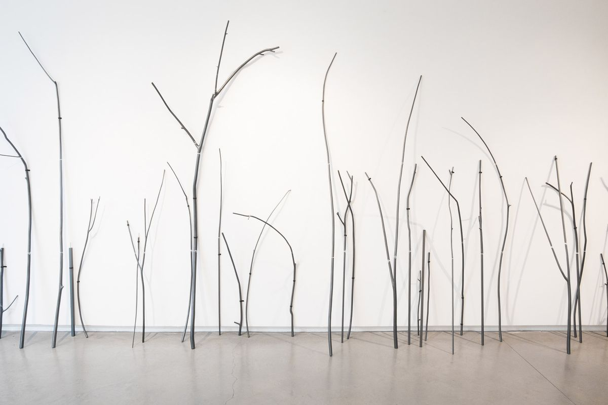
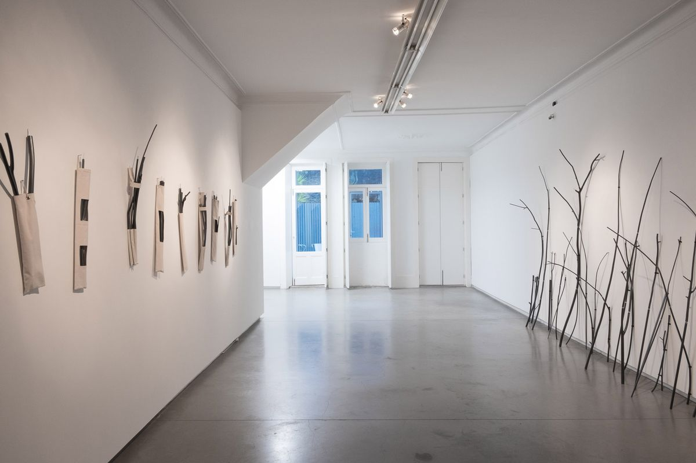
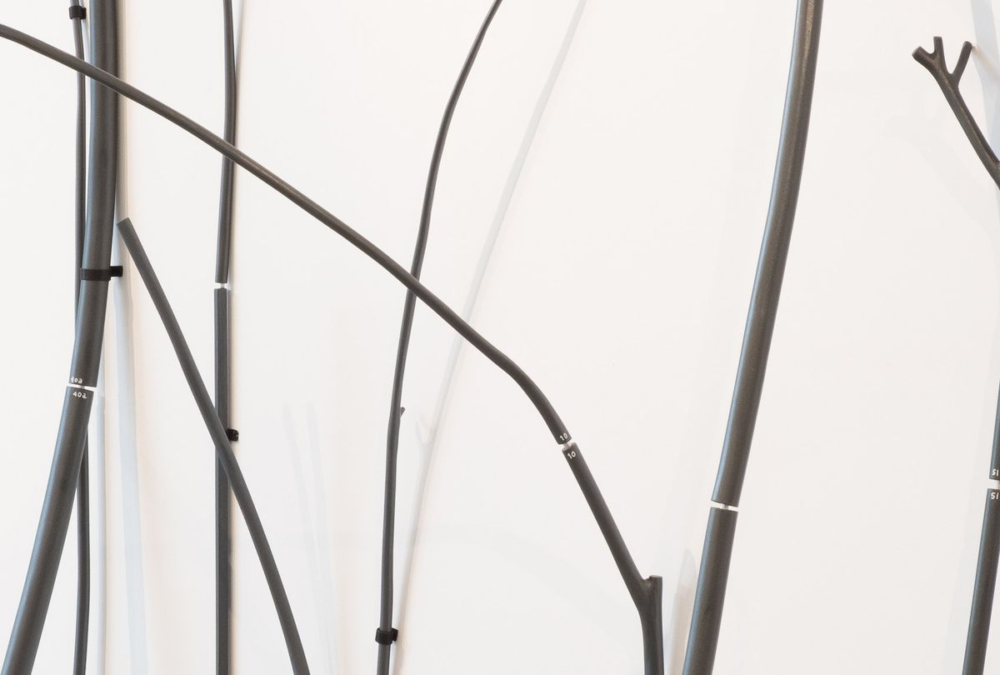
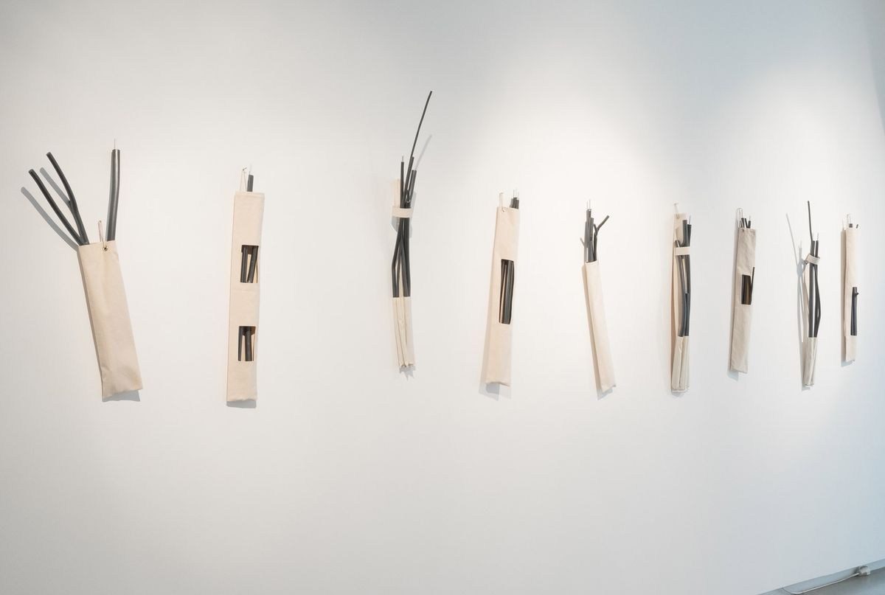
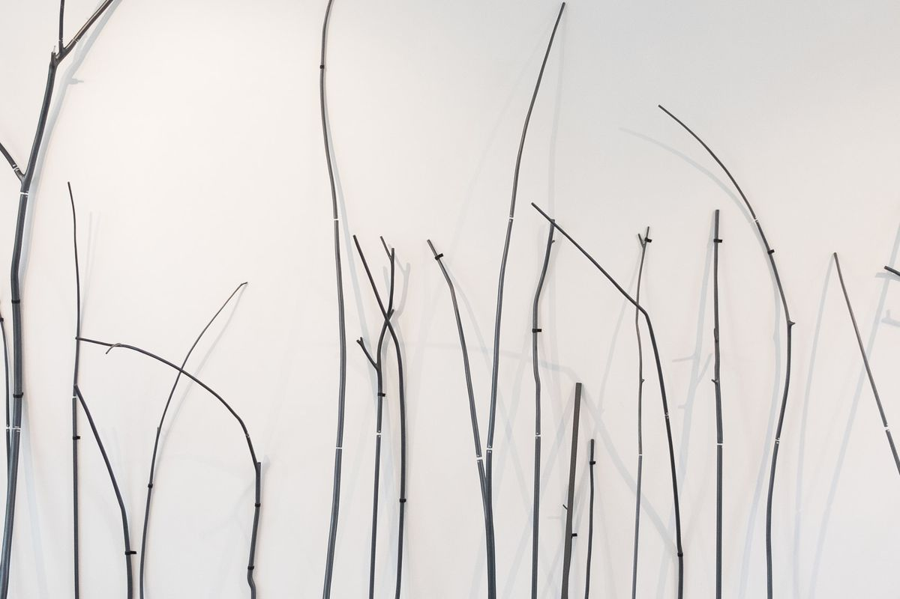
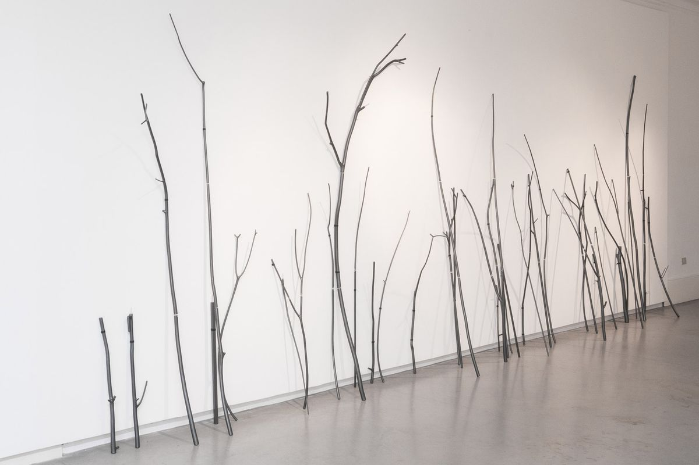
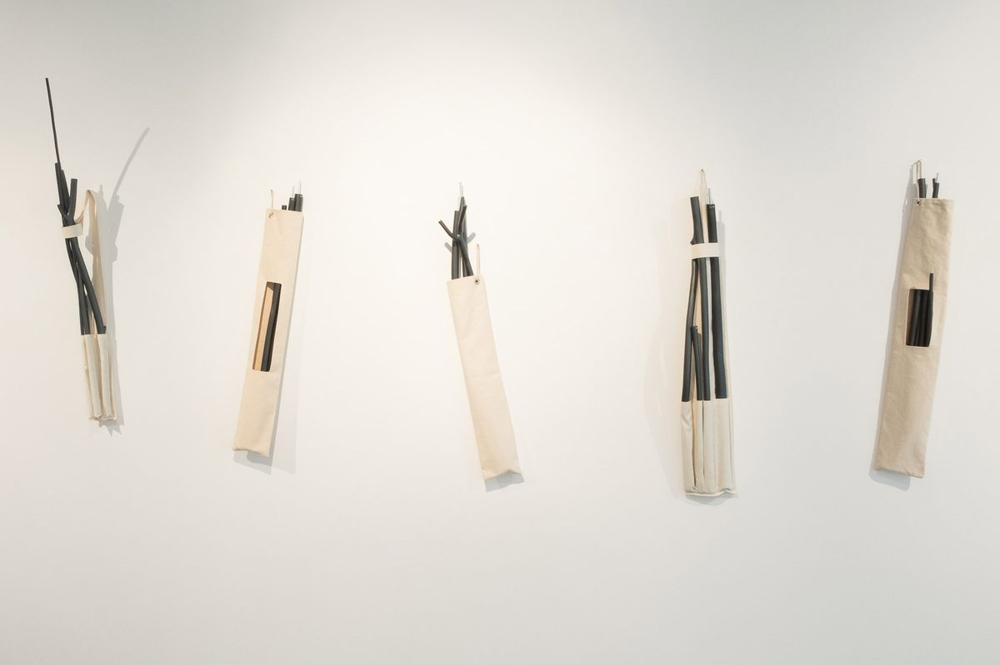

Dendrograma | Tree-kit
MCO Arte Contemporânea, Porto, 2016 · Centro Cultural de Cascais, 2026
Um projecto sobre a portabilidade, o desenho no espaço, repouso/agência e a ideia (intraduzível) de freedom of display.
Dendrograma | Tree-kit é o produto de uma pesquisa sobre as possibilidades do desenho no espaço. Composta por módulos de madeira pintada, esta peça funciona como um desenho tridimensional que incorpora os efeitos de luz e sombra que se projectam nas superfícies do seu contentor — o espaço de exposição. Dendrograma é um kit: as suas peças modulares são ramos transformados que se encaixam uns nos outros e podem ser montados como uma tenda. Este processo torna a obra portátil e mutante: pode estar fechada ou aberta, em repouso ou a actuar no espaço quando manipulada por um participante. Este kit condensa três momentos: um inicial, de repouso e portabilidade (fechado, bidimensional), o acto performativo (abrir, instalar), e o corpo expandido (aberto, tridimensional).









Textos
- Dendrograma | Tree-kitCatarina Leitão · MCO Arte Contemporânea, Porto · 04.2016 · PT
- Dendrograma | Tree-kit, obra completa (PDF)Catarina Leitão · 2016 · PT